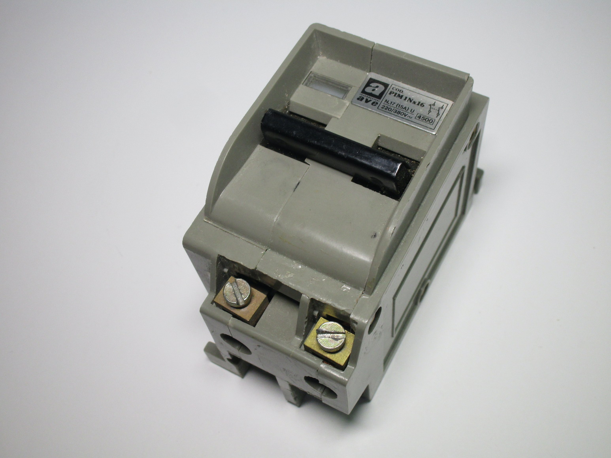
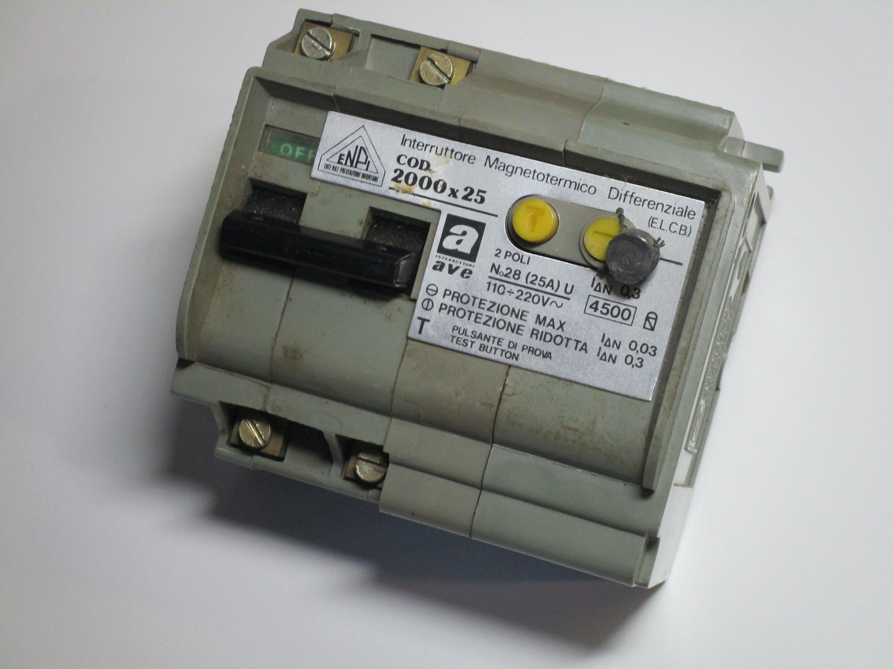

Vintage fuse and breaker panels in Italy
Back in the day, Italy didn't have a single system for fuse boxes or breaker panels, unlike for example the Wylex fuseboxes in the UK, the Edison screw fuses in North America or some of the self-contained Diazed fuseboxes in parts of Continental Europe.
Instead, separate fuse holders (and, later, breakers) were available which could then be screwed onto a board or an electrical enclosure of some sort. This was obviously more time-consuming, though it wouldn't have been as much of a problem back then as houses had very few circuits.
Fuse holders
Fuse holders can vary considerably in design, but they all fall into two categories: they can be cartridge-based, or rewireable.
Rewireable fuse holders have the advantae of being cheap - you could buy cards with fuse wire of different sizes that would last for quite a while. However, they took more skill to install (you generally needed to use a screwdriver) and there wasn't any protection against people using the wrong type of wire or something like a paperclip.
Cartridge fuses, on the other hand, only required removing the old one by unscrewing a cap and installing the new fuse. They were however more expensive (as each fuse was enclosed in ceramic). Note that in Italy the Diazed fuse system used in most other European countries was considerably less popular, and generally used more for industrial applications.
The main disadvantage of fuses was that they're not resettable. Breakers did eventually become commonplace, of course, and nowadays you'll almost never find an old fusebox still in place (likely also due to RCDs being mandatory), but their much higher complexity meant that they were out of the price range of most people even decades after their introduction.
Ceramic rewireable fuse holder
This was one of the earliest types of fuse holder ever used in Italy, likely due to its simplicity. It consists simply of a ceramic base (bakeilite versions also existed), with a lid that screws on top of it, with screw terminals for the wires and the fuse wire itself.
Obviously, this was quite unsafe, and it meant that it was necessary to turn the power off to replace a fuse, which was quite inconvenient.
{kind=link}
{kind=link}
"Tobacco tin" fuse holder
The so-called "portafusibile a tabacchiera", tobacco tin fuse holder, was one of the most popular styles of fuse holder in Italy until the 50s. They consisted of a ceramic base with metal contacts, with screws to connect the line and load wires, and a removable lid (also made of ceramic) where the fuse wire was held.
Both single and double-pole examples existed; this particular one is a double pole one, and it's in remarkably good condition. This probably means that it was never used at all, as normally used electrical items show signs of wear and tear.

{kind=link}
Edison socket cartridge fuses


"Signorini" rewireable fuse holder
This is another style of fuse holder, quite similar to the "tobacco tin" one shown earlier, though this was likely newer. The main difference is that this one has two separate lids for each fuse, and the lids are held with a metal nut which screws onto a tread present on the fuse holder itself.
While the metal screw is kept separate from the fuse wire through some ceramic guides, there might be a possiblity that a melted fuse would make it live, and thus place the user in danger of receiving a shock, so this doesn't seem like a particularly great design.
{kind=link}
{kind=link}

25A rewireable fuse holder

{kind=link}

BTicino cartridge fuses

{kind=link}
{kind=link}
BTicino 642 rewireable fuse holder
{kind=link}
{kind=link}
{kind=link}
Breakers
Zeus Rapizzi breaker
{kind=link}

{kind=link}
BTicino double-pole breaker


BTicino single-pole breaker

{kind=link}

AVE type 1902 breaker
{kind=link}


AVE "PIM" breaker
{kind=link}


Siemens DIN rail breaker

{kind=link}
RCDs
As explained previously, RCDs are devices which sense the difference between the currents in the line and neutral wires and trip if that exceeds a certain limit - because of this, in the technical terminology used in Italy they are referred to as "differential interruptors".
The earliest RCDs were sold by BTicino under their "Salvavita" trademark; this name was so popular that it's now the way RCDs are referred to colloquially.
Early RCD breaker from AVE
{kind=link}

{kind=link}
Other devices
BTicino single-pole switch
Rating: 26A 380V
This is a fairly single-pole switch; it doesn't feature any sort of protection other than providing a safe way to interrupt a circuit. This could have been used, for example, for isolation of a fixed appliance such as a water heater.
Like with other devices by BTicino shown on this page, it features removable covers to feed wire or conduit through.
{kind=link}
{kind=link}